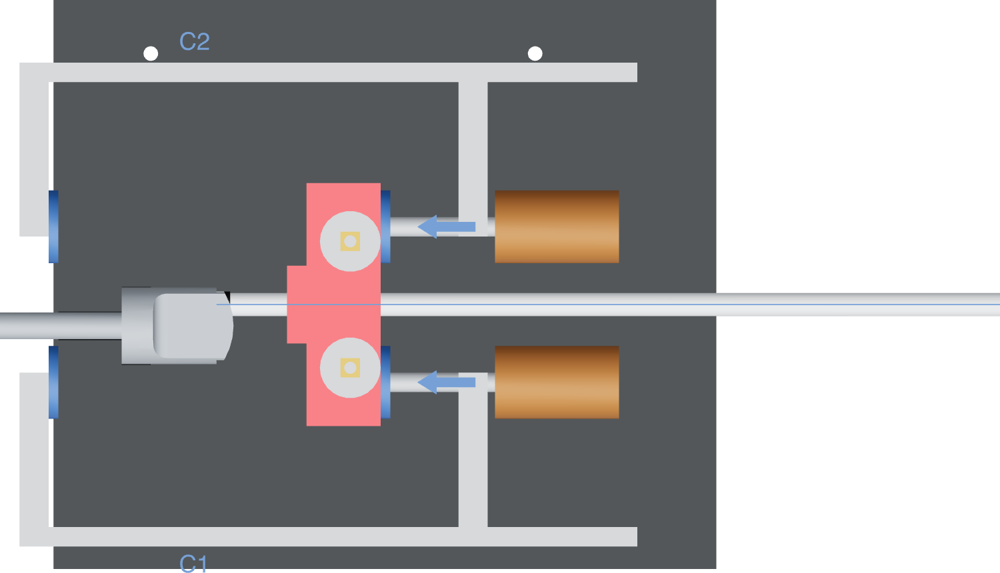

Two metal force loops
Each metal clamp, C1 and C2, bears on an outboard contact beside the tube. Both contacts act on one guided grip; keep that grip square as it advances.

| Through the fixture | Contact |
|---|---|
| Each metal loop | The screw and moving pad load the grip; the fixed pad backs the donor reaction block. Each steel bar joins its fixed and sliding jaws to close the reaction path. |
| Grip to tube | Jaw pockets locate the TPU liners around the bare LLDPE tube. The tube and thimble transfer insertion resistance from the metal bore back to the grip. |
| Donor reaction | The metal base annulus rests against the donor reaction block. The arches, plunger and attached faucet lever remain clear. |
Coral shows the part added or moved; existing prints are black, metal is grey, nuts are brass and alignment marks are blue. Pictures show nominal geometry. Do not measure a picture.
Check both contacts
Two pressure points describe where the screws act. They do not establish equal force sharing or a load rating.